はじめに
|
|
１．このシステムについて
|
- 個人または家族で使える自宅用のWebポータルシステムです。
- システムを利用するには、ユーザー登録と認証が必要です。ユーザー登録は、システム管理者が一括登録することも可能です。
- ユーザー単位で他のユーザーに対して参照・書込の権限設定ができます。
|
ユーザー登録
|
|
１．ユーザー登録
|
|
- 最初にユーザー登録をしてください。
- アカウント名とハンドル名は、登録済みのものは使えません。チェックボタンで使用可能かどうか確認できます。
|
|
２．確認画面
|
|
- ユーザー登録画面で確認ボタンを押すと、確認画面が表示されます。
- 絵文字コードを入れてください。絵文字が見づらい場合は、絵文字変更ボタンを押すと、絵文字が変わります。
|
ログイン
|
|
２．ログイン
|
|
- ユーザー登録ができたら、ログインしてください。
- ログイン情報は、クッキーに保存されます。
- ログオフをしないでブラウザを閉じてもログイン状態は保持されます。
|
検索機能
|
|
１．コンテンツ検索機能
|

|
- INDEX、カレンダー、旅行記、メモ、学習、住所録、ID管理、預貯金管理、利用ガイド、ユーザー一覧のそれぞれの検索機能では、検索キーにAND,ORおよび()を使った複合検索ができます。
- ANDは「&」または「*」、ORは「|」「+」を使います。
- [例] ( 赤坂 | 六本木 ) & イタリアン
[例] ( 赤坂 + 六本木 ) * イタリアン
スペース(空白)は入れても入れなくても構いません。&|*+()は、全角も可です。 - &|*+()を正しく入れないとSQL構文エラーになります。
- 実運用定義ファイルで、
define("_DEBUG_ERROR_MSG", "YES");
を指定している場合、上記、検索機能でSQL構文エラーが発生するとSQL文を表示します。 - &|*+()を使わない場合は、スペース(空白)で文字列を区切るとAND検索になります。
|
INDEX
|
|
１．トップページ
|
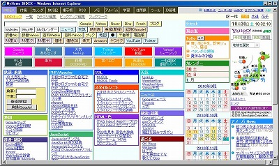
|
- MyHome Portalのトップページです。
- 各検索ボタンで、Googleなどのインターネット検索やMyHomeのカレンダーやメモの検索ができます。
- 検索キー入力ボックスでは、Google Suggest APIを使った予測変換(単語補完)が利用できます。予測変換(単語補完)機能は、検索キー入力ボックスの左の●をクリックすることでオフにも出来ます。
- 乗換(駅探)、経路(Google)検索では、乗車駅(出発地)、下車駅(目的地)をスペースで区切って入力してください。乗換(駅探)は、My設定で最寄駅を登録しておくと、下車駅のみを入れて、乗換検索ができます。経路(Google)検索は、My設定で住所（経路起点）を登録しておくと、目的地のみを入れて、起点からのGoogleルート検索ができます。
- ユーザー単位に、良く使うホームページを登録して、自分のポータルとして使えます。任意のブログパーツは貼ることもできます。
- とくに良く使うホームページをピックアップして、上段にタイル型で表示できます。
- カテゴリボックスのカテゴリ名をクリックするとカテゴリ単位の一覧形式表示（２．）になります。
- 掲示板の最新記事数件分を右側に表示します。
- 3日分のスケジュールを右側に表示します。ここから直接スケジュール入力・修正画面に入れます。
- 当月の前後3か月分のカレンダーも表示されます。スケジュール有の日付は色が変わります。日付をクリックすると、該当日のスケジュール一覧表示になります。
- 画面右側に、全ユーザー共通に、livedoor天気Webサービスや、任意のブログパーツを貼り付けることができます。
|
|
２．一覧形式表示
|

|
- ホームページ（ブックマーク）の一覧形式の表示画面です。
|
|
３．サムネイル形式表示
|

|
- ホームページの画面イメージをサムネイル形式で表示します。
|
|
４．ホームページの登録
|
|
- 一覧形式の表示画面の「新規登録」ボタンで「新規登録」画面が表示されます。
- 一覧形式の表示画面で、「一括修正/追加/削除」ボタンを押すと、一覧形式でホームページの登録、修正ができます。
|
|
５．カテゴリ編集
|
|
- カテゴリの編集画面です。
- カテゴリはユーザー単位です。
|
|
６．カテゴリの追加
|
|
- カテゴリ編集画面で、「一括修正/追加/削除」ボタンを押すと、カテゴリの追加や修正ができます。
- INDEXトップページでは、4列に分けて表示します。表示列と表示順を指定してください。
- カテゴリに色を付けてください。
|
|
７．ピックアップ編集
|
|
- とくに良く使うホームページをピックアップして、上段にタイル型で表示します。
- ピックアップの編集画面です。
- タイルの背景色や表示順序を設定できます。
- 表示順序の入れ替えは、マウスのドラッグ＆ドロップでも出来ます。
|
|
８．ブックマーク
|

|
- 任意のフォルダのインターネットショートカットファイル(拡張子：urlのファイル/IEのお気に入りのファイル)を、INDEXの一覧と同様の形式で表示します。キャプチャ画像付きやキャプチャ画像のサムネイル表示もできます。
- ブックマークで表示するのは、サーバーローカルのディレクトリです。PC1台での利用の場合は、そのPCのディレクトリになります。デフォルトディレクトリは、実運用定義ファイルで設定できます。
- 検索は、サブディレクトリ検索もできます。
- 検索文字列は、スペース区切りで複数キーワードAND検索もできます。
- システム管理者のみが利用できます。
- ファイル名に「≫」等の特殊文字が含まれている場合は、エラー表示します。この場合、リンク表示できません。
|
|
９．Myニュース
|
|
- ニュース検索用キーワードを登録して、ボタンクリックでGoogleニュース検索が出来ます。
- キーワードは、AND/ORの指定ができます。
- 検索対象は、「記事見出し＋記事本文」「記事見出しのみ」が選択できます。通常のGoogle検索やGoogleブログ検索の24時間以内、1週間以内検索もできます。Yahooリアルタイム(Twitter)検索もできます。
|
ToDo
|
|
１．ToDo管理
|

|
- シンプルなToDo管理です。
- INDEXトップページと、月間カレンダーの右にToDoが表示されます。
- INDEXトップページでは、優先度の高いもの3件を表示します。「△▽」ボタン」で全件表示と3件表示が切り替わります。月間カレンダーでは、全件表示します。
- INDEXトップページまたは月間カレンダーの「ToDo」をクリックすると、ToDo追加、編集用の子ウインドウが開きます。
- 文字に色を付けられます。色選択プルダウンを選択した時点で、テキスト枠内文字も色が変わります。
- ↑、↓ボタンで、優先順位を変更できます。新規追加分は、一番上に追加されます。
- 優先順位の入れ替えは、マウスのドラッグ＆ドロップでも出来ます。
- 修正ボタンを押すと、その行の下に修正用枠が表示されます。
- INDEXトップページおよび月間カレンダーのToDo表示はAjaxを利用していますが、一定時間間隔のポーリングはしていません。
- ToDo追加、編集用の子ウインドウを閉じると、元の親画面のToDoに反映されます。
|
付箋ボード
|
|
付箋ボード
|
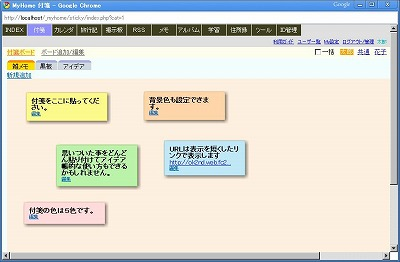
|
- ポスト・イットのような感じで付箋メモを貼り付けられます。
- 付箋はマウス・ドラッグで貼り付け場所を移動できます。
- 付箋ボードは、ユーザー単位に複数設定できます。
- 新規追加後の付箋の編集ボタンは2度クリックしないと反応しません。(実は最初の1回目のクリックでは一旦画面全体をリフレッシュします。Ajaxで全てコントルールがうまくいかなかったので、こうなっています。)
- 新規付箋の文字サイズやURLリンク表示はすぐに反映されません。再表示して初めて反映されます。
- IE6では、付箋を貼りつけるボード部分が<iframe>になっています。
- 参照権限のみのユーザーの付箋ボードは閲覧はできますが編集はできません。ドラッグによる一時的な移動はできますが、再表示すると元に戻ります。
- 複数のユーザーに書き込み権限がついているアカウントの付箋ボードを複数のユーザーが同時に編集した場合、他ユーザーの追加・編集はリアルタイムには反映されません。再表示して初めて反映されます。
|
カレンダー
|
|
０１．月間表示
|
|
- カレンダー（スケジューラー）のトップページです。
- 日付または、日付欄の空白部分をダブルクリックすると、新規入力画面が開きます。
- アイコンを付けたり、スケジュールに色を付けたりできます。
- 詳細表示にすると、スケジュール本文全てが表示されます。
- 添付ファイルが画像の場合、合わせて表示します。
- カテゴリやキーワードで検索ができます。検索されたスケジュールのみが表示されます。
- ↑印をクリックすると、詳細スケジュールがポップアップ表示されます。
- 入力画面で、件名右のチェックボックス「地図」にチェックすると、月間スケジュールに「→地図」が表示され、これをクリックすると、Google地図が別ウインドウで開きます。My設定で「住所 (経路起点)」を登録しておくと「→経路」も表示されます。これをクリックすると、Googleルートマップが別ウインドウで開きます。
- 本文入力で、駅名や住所を「地」ボタンで囲むと、スケジュール詳細表示で「→地図」および「→経路」が表示され、件名と同様にGoogle地図検索、経路検索ができます。
|
|
０２．月間アルバム表示
|
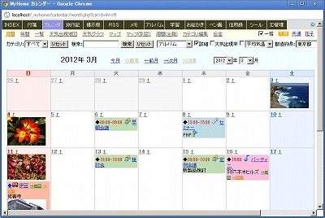
|
- アルバム表示にすると、アルバムフォルダに写真がある日付に写真を1枚表示します。（アルバムフォルダは、My設定で各自設定します。）
- ＜アルバムフォルダのフォルダ階層例＞
/2009/
/2009/2009-01-11-京都
/2009/2009-02-15-伊豆 - 写真をクリックすると、アルバムフォルダに移動します。
|
|
０３．年間表示
|
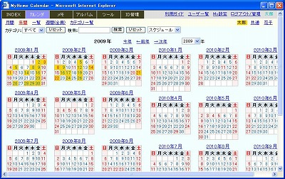
|
- 年間表示にすると、2年分のカレンダーを表示します。
- スケジュールモードでは、スケジュール有の日付は色表示されます。
- アルバムモードでは、アルバムフォルダに写真がある日付は色表示されます。
- アルバムモードでは、日付をクリックすると、アルバムが表示されます。
|
|
０４．一覧表示
|
|
- 一覧表示の画面です。
- 今月、今週などのスケジュールを一覧表示できます。
- 一覧形式で、一括修正もできます。
|
|
０５．週間（全員）表示
|
|
- 週間表示画面です。
- My参照メンバ全員のスケジュールを一括表示します。
|
|
０６．天気出現率
|


|
- カレンダーで、天気出現率を表示します。天気出現率とは、過去30年間の大気現象や日降水量、日平均雲量から割り出したものです。
- 月間、年間カレンダーで、各日の都道府県別の天気出現率を基にした出現率の高い天気を表示します。主に都道府県庁所在地の天気出現率を基にしています。北海道は主な支庁の都市を表示します。佐渡、伊豆大島、輪島の天気出現率も表示します。
- 日付別の天気出現率の日本地図表示もできます。指定日の日本全体の天気の傾向が読み取れます。
- 天気マークと色分けの説明は、年間カレンダーの右側に表示しています。色分け区分の比率は、定義ファイルで変更することもできます。
- 注釈は、晴れ/曇り/雨/雪の天気出現率のパーセント(%)を表示しています。
|
|
０７．最高気温、平均気温、最低気温
|
|
- 月間、年間カレンダーで、各日の都道府県別の最高気温、平均気温、最低気温を表示します。30年間の気象データを基にした気温です。
- 日付別の最高気温、平均気温、最低気温の日本地図表示もできます。
|
|
０８．天気グラフ
|

|
- 都道府県別の月平均天気出現率と月平均気温をグラフ表示できます。
|
|
０９．マップ
|

|
- カレンダーに登録されている場所をGoogleマップでマーカー表示します。
- 件名に地図チェックが付いているスケジュールが対象です。
- 検索条件にあった地点全てを表示します。去年旅行で行ったところの一覧地図といった感じで使えます。
- 同じ場所が複数ある場合、マーカーは１つにまとめます。
- マーカーをクリックすると、スケジュールの日付とスケジュール内容を表示します。
- Google Earth 表示もできます。（実運用定義ファイルでGoogle Maps API V3を指定している場合は、Google Earth 表示はできません。）
- ※ 表示地点が多いと時間がかかります。
- ※ 表示地点が多いと全てを表示できない場合があります。その場合、表示できなかった地名を下に表示します。
- ※ この機能を使った後、他のページに移動しても、ブラウザの動作が遅いままとなります。いったんブラウザを閉じて再度開いてください。
|
|
１０．マップ（別窓）
|

|
- マップの全画面タイプです。
- 別ウインドウで開きます。
- ストリートビュー表示もできます。
- ※ 表示地点が多いと時間がかかります。
- ※ 表示地点が多いと全てを表示できない場合があります。その場合、表示できなかった地名を下に表示します。
- ※ この機能を使った後、他のページに移動しても、ブラウザの動作が遅いままとなります。いったんブラウザを閉じて再度開いてください。
|
|
１１．カテゴリ編集
|
|
- カテゴリの編集画面です。
- カテゴリはユーザー単位です。
- カテゴリにアイコンと背景色を指定できます。
- カテゴリの背景色は、月間スケジュールに適用されます。
|
|
１２．スケジュール入力
|

|
- スケジュール入力画面です。
- HTMLタグが使えます。アイコン挿入ボタンや色タグ挿入ボタンが使えます。
- Ｌボタンを押すとURLを入力して、タグ<a href=...></a>を挿入できます。
- 添付ファイルも付けられます。
- カレンダーで件名を使わずにスケジュール本文のみを使う設定ができます。MY設定で、設定してください。この設定をすると入力画面に件名欄が表示されません。
|
|
１３．スケジュール入力（２）
|
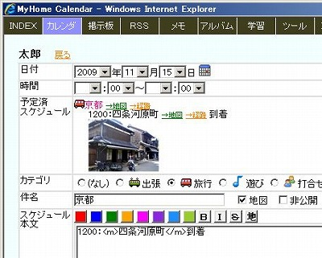
|
- 件名右のチェックボックス「地図」にチェックすると、月間スケジュールに「→地図」が表示され、これをクリックすると、Google地図が別ウインドウで開きます。
- My設定で「住所 (経路起点)」を登録しておくと「→経路」も表示されます。これをクリックすると、Googleルートマップが別ウインドウで開きます。
- 本文の駅名や住所を「地」ボタンで囲む(タグ<m></m>で囲まれます。)と、スケジュール詳細表示で、「→地図」および「→経路」が表示され、件名と同様にGoogle地図検索、経路検索ができます。
|
|
１４．メール送信
|

|
- ToDoおよびスケジュールを電子メールで送信できます。
- システム管理者によるメール環境設定が必要です。
- ユーザー各自が事前にMy設定で「スケジュール送信先」メールアドレスを登録しておく必要があります。
|
|
１５．伝言
|
|
- 伝言機能です。
- 電子メールで伝言を送信することもできます。
- 伝言と同時にスケジュールを宛先メンバのカレンダーに追加するができます。複数ユーザーにスケジュールを一括登録できます。
- 伝言機能によるスケジュール登録では、宛先ユーザーが「書込許可」設定していないユーザーにも書き込みできます。
- 伝言は、伝言ページを本人が開いた時点で、既読扱いとなります。
- 未読伝言がある場合、「INDEX」トップページ、カレンダー月間表示ページに「未読伝言あり」と表示します。
|
旅行記
|
|
１．表示画面
|
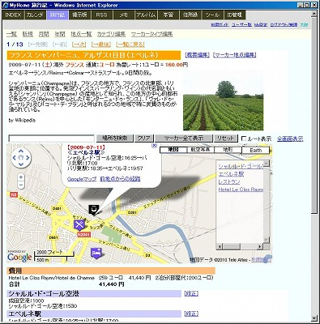
|
- 旅行記の表示画面です。
- Googleマップで、登録地点をマーカー表示できます。
- 実運用定義ファイルでGoogle Maps API のV3利用を指定して出来ます。V3版の場合、Google Maps API キーが不要になり、localhost以外でのアクセスが利用可能になります。V3版の場合、Google Earth APIによる3D表示ができません。
- 表示画面のGoogleマップの拡大・縮小、移動などはデータベースには記録されません。リセットや再表示をすると元にもどります。
- マーカーをクリックすると、吹き出しが表示されます。
- 「Googleマップ」「前(次)地点からの経路」をクリックすると、実際のGoogleマップにジャンプします。
|
|
２．全画面マップ
|


|
- 全画面タイプのGoogleマップ表示画面です。
- ストリートビュー表示もできます。
- 全マーカー地点のルート表示もできます。左側にルートのナビゲーションもでます。ルートは車または徒歩によるものです。電車ルートは表示されません。
|
|
３．一覧
|
|
- 旅行記の一覧です。
- 日付や記事内容で検索できます。
|
|
４．一括マップ
|
|
- 一覧で、複数の日付を選択して、一括マップを作成できます。
- 複数日の行き先地点全てのマーカーを1枚の地図に表示します。
- ストリートビュー表示もできます。
- 複数日に跨る全マーカー地点のルート表示もできます。
|
|
５．登録・修正画面
|
|
- 登録・修正画面です。
- マーカーの登録や修正ができます。
- マーカーは移動もできます。
- マーカーの修正や移動、地図の拡大・縮小はAjaxを使って、画面遷移なしに、リアルタイムでデータベースに記録します。
- マーカー地点の追加は、この登録・修正画面でしかできません。
- 地図上で、マウスクリックすると、新しいマーカーを表示できます。
- 地名を入れて「場所を検索」することでも、新しいマーカーを表示できます。
- 「マーカー全て表示」で、全マーカーを表示できるように、地図のズームと移動を行ないます。
|
|
６．地点一覧
|

|
- マーカー地点情報の一覧画面です。
- 複数日のマーカー地点情報を一括して修正できます。
|
|
７．マーカータイプ、通貨種類、評価項目編集
|
|
- マーカータイプは、全ユーザー共通です。
- マーカータイプ編集は、システム管理者のみが行なえます。
- アイコンファイルは、フォルダ「../icon/maps/」を使います。
- 通貨種類の追加は、実運用定義ファイルで指定してください。
define("PRICE_UNIT_SELECT", "円,ドル,ユーロ"); - 地点の評価項目は、実運用定義ファイルで指定してください。総合評価を含めて最大9個までです。
define("DIARY_RATING_CAPTION", "総合評価,コスト,施設,雰囲気,料理,風呂");
|
掲示板
|
|
１．投稿タイトル一覧
|
|
- MyHome Portal全ユーザー共通の掲示板です。
- 投稿の検索やフィルタリングができます。
|
|
２．投稿内容表示
|

|
- スレッド単位の表示です。
- スレッド単位でページ送りで投稿を閲覧できます。
- 投稿の修正、削除、復活ができます。
|
|
３．FLV、MP4、WMV動画再生
|

|
- FLV、MP4、WMV動画を添付した場合は、掲示板スレッド表示画面内で動画再生ができます。
|
|
４．新規投稿画面
|

|
- WYSIWYGでHTMLタグが使えます。
- WYSIWYGエディタは左の２種類のうち、いずれかが使えます。
- ファイルや写真の添付もできます。
|
|
５．お絵かき
|
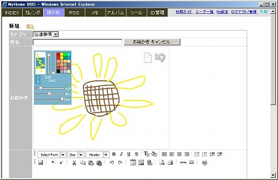
|
- 掲示板では、お絵かきもできます。「お絵かき」ボタンを押すと、お絵かき欄が表示されます。
- お絵かきした絵をそのまま投稿できます。投稿後、修正もできます。
|
ＲＳＳリーダー
|
|
１．ＲＳＳ記事一覧
|
|
- RSSの記事一覧です。
- カテゴリ別に、タイル形式で記事を5件ずつ一覧表示します。
- ↑クリックでポップアップウィンドウで全件表示します。
- 右側の↑では、本文も表示します。クライアントサイドで、都度RSSフィードを取得して表示します。
- 表示順序は、マウスのドラッグ＆ドロップで変更できます。
|
|
２．ＲＳＳ追加/削除
|
|
- RSSの追加/修正/削除画面です。
- 一覧形式で編集できます。
|
メモ
|
|
１．メモ入力画面
|
|
- メモ入力画面です。
- タブの入力もできます。複数行選択して、インデントをすることもできます。
|
|
２．メモ一覧表示
|
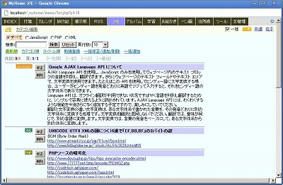
|
- メモ一覧画面です。
- カテゴリ別表示やキーワード検索ができます。
|
|
３．一括修正/追加/削除
|
|
- 一覧形式で、一括修正/追加/削除ができます。
|
|
４．Simple Memo
|

|
- MyHome Portalページヘッダー右上のペンシル・アイコンをクリックすると開きます。
- 基本コンテンツの「メモ」とは違って、ブラウザ画面一杯の<textarea>だけのシンプルなメモ帳です。
- ログイン・ユーザー毎に1ページです。保存ボタンで、MySQLデータベースに保存されます。
- 保存ボタンを押しても、ページ遷移はせずに<textarea>のフォーム状態のままです。
- フォント種類とフォントサイズを変更できます。タブ入力機能と複数行選択によるタブ一括挿入によるインデントもできます。
- それ以外は通常の<textarea>によるシンプルな入力画面です。
|
アルバム
|
|
０１．フォトアルバム
|

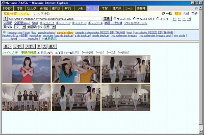
|
- サーバーローカルのディレクトリ指定で、イメージデータのサムネイル表示またはスライドショー表示ができます。
- サムネイルの画像サイズの拡大縮小ができます。
- 画像の表示順は、ファイル名順、更新日時順、それぞれ昇順、降順が選択できます。
- 動画のサムネイル表示もできます。（事前に、システム管理者が、環境設定をしている必要があります。）
- 動画のサムネイル画像の開始秒の指定もできます。
- サムネイル画像をクリックするとポップアップで拡大表示します。
- キーボード操作によるフォルダ移動やページ移動もできます。
・[Tab]：次フォルダ
・[Caps Lock]：前フォルダ
・[→]：次ページ
・[←]：前ページ
・10キーの[+]：サムネイル画像サイズ大きく
・10キーの[-]：サムネイル画像サイズ小さく
・[A]：モード切替→サムネイル
・[B]：モード切替→サムネイル(B)
・[S]：モード切替→スライド
・[Space]：モード切替→全画面スライド - ※ キーボード操作機能を使わない場合、実運用定義ファイルで以下を指定してください。
define("photo_FOLDER_MOVE_BY_KEYBOARD", "NO"); - ※ キーボード操作によるモード切替を使わない場合、実運用定義ファイルで以下を指定してください。
define("photo_MODE_CHANGE_BY_KEYBOARD", "NO");
|
|
０２．サムネイル（Ｂ）
|
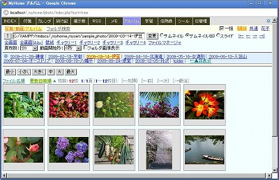
|
- サムネイル（Ｂ）タイプ表示です。
- サムネイル画像をクリックすると、スライドタイプ画面にページ遷移します。
|
|
０３．スライド
|


|
- スライドタイプの表示です。
- 下には、続く10枚の画像を表示します。下の画像をクリックすると、その画像に移動します。
- 全画面モードにすると、オートプレイのスライドショーもできます。オートプレイは繰り返しもできます。
- オプションとして、ImageFilters、CSSフィルタ、deviantARTなどの画像加工機能もあります。
- さざ波、点描アニメ、揺れる、拡大縮小、チルトシフト、雨降り等の画像効果や、ジグソーパズルなどのオプション機能もあります。これらは、IEでは動作しません。Chromeのみで機能するものもあります。
- さざ波は、画像の上にマウスを重ねると、さざ波のような効果が出ます。
- チルトシフトは、マウスクリックで、チルトシフト効果をON/OFF出来ます。
- 雨降りでは、写真の上に窓ガラスに水滴が付くようなイメージを付けたします。IEでは機能しません。
キーボードで、1～3の数字キーを押すと、水滴のイメージが変わります。
キーボードの[↑]でガラスの透明度を上げます。[↓]でガラスの透明度を下げます。 - 揺れる、拡大縮小、チルトシフト、雨降り、CSSフィルタは、キーボードによるページ移動も可能です。ページ移動では、画像効果の設定情報は引き継がれます。
・[ESC]：ウインドウを閉じる
・[→], [Page Down], [Enter], [Space]：次画像
・[←], [Page Up],[無変換]：前画像
・[Tab]：10画像スキップ
・[Caps Lock]：10画像前へスキップ
・[Home]：先頭画像へスキップ
・[End]：最後画像へスキップ
|
|
０４．動画再生
|

|
- FLV、MP4、WMV動画をスライドショーの中で再生できます。
- MPG、MOV、M2TS(AVCHD)の動画も再生できます。
ffmpegを使って、FLVに変換して表示します。変換したFLVファイルは、各フォルダの下にサブディレクトリ「/___flv___/」を作成して、その下に格納します。 変換後の動画の画質は劣化する可能性する可能があります。動画の再生時間が長い場合、ブラウザがフリーズする可能性があります。 - MPG、MOV、M2TS(AVCHD)動画のFLV一括変換もできます。システム管理者のみ利用できます。 変換する動画の再生時間が長い場合、ブラウザがフリーズする可能性があります。
- ※ 動画再生機能は、事前に、システム管理者が、環境設定をしている場合のみ利用できます。
|
|
０５．動画時間分割
|

|
- 動画を時間分割して、サムネイル表示をすることもできます。
|
|
０６．全画面スライドショー
|
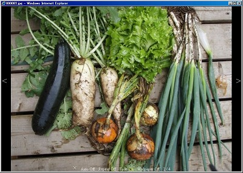
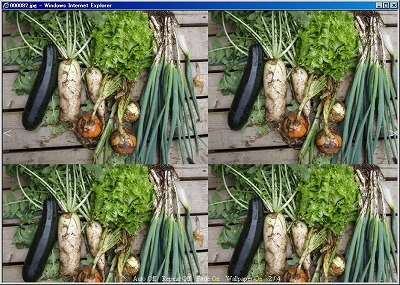
|
- 全画面表示のスライドショーもできます。
- F11キーと組み合わせると、パソコン画面一杯でスライドショーができます。
- 左右の＜＞キーで前後の画像に移動できます。
- 画面下の×クリックで通常のスライド画面に戻ります。
- Auto Onにすると、オートプレイもできます。オートプレイの時間間隔は、キーボードで変更することもできます。
- 動画のFLV/WMV動画再生モードの場合は、指定時間でなく、動画再生時間後に次の動画に移動します。
- Repeat Onで、オートプレイの繰り返しもできます。
- Lキーを押すと、写真を縁ありにして傾けて表示します。ただし、IEでは機能しません。
- 全画面表示のスライドショーでは壁紙タイプもあります。タイル形式で画像を並べます。
- キーボードによる操作も可能です。
・[ESC]：全画面モード終了
・[→], [Page Down], [Enter], [Space]：次画像
・[←], [Page Up],[無変換]：前画像
・[Tab]：10画像後へスキップ(リピートは無効)
・[Caps Lock]：10画像前へスキップ(リピートは無効)
・[Home]：先頭画像へスキップ
・[End]：最後画像へスキップ
・[A]：全画面オートプレイ On/Off
・[R]：リピート On/Off
・[F]：フェードイン On/Off
・[L]：傾きモード On/Off
・[W]：壁紙モード On/Off
・[1]～[9]：オートプレイ時間間隔変更 - 全画面モードでは、画像ファイルの削除機能もあります。
[Delete]キーを押すと、表示されている画像ファイルを該当フォルダから削除します。削除したファイルは該当フォルダの下に「___trash___」フォルダを作成し、そこに保管します。
「___small___」と「___thumb___」以下の同名ファイルは完全削除します。
ファイル削除機能は、システム管理者のみ使えます。
|
|
０７．全画面(Ajax)スライドショー
|
|
- Ajaxを利用して、ページ遷移なしのスムーズな全画面スライドショーができます。画像切り替えはフェードアウト＋フェードインで切り替えます。
- オートプレイ&オートリピート固定です。
- マウス操作はできません。元のアルバム画面に戻るには[Esc]キーを押してください。
- キーボードの数字キー[1]～[9]で、オートプレイの時間間隔を変更できます。
- 通常の全画面モード・スライドショーで使える[Esc][1]～[9]キー以外のキー操作はできません。
- フェードアウトおよびフェードインの時間は実運用定義ファイルで変更できます。
|
|
０８．ギャラリー１・２
|
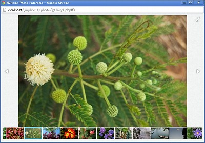

|
- ギャラリー1は、JavaScriptライブラリ「Fotorama」を利用した画像ギャラリーです。
http://fotorama.io/ - ギャラリー2は、JavaScriptライブラリ「jQuery CollagePlus」を利用した画像ギャラリーです。
http://collageplus.edlea.com/ - カレント・ディレクトリのすべての画像をブラウザに取り込みますので、カレント・ディレクトリに画像が多いとすべてのサムネイル画像表示まで時間がかかります。
- [Esc]キーで元のページに戻ります。
|
|
０９．ギャラリー３・４・５
|

|
- ギャラリー3は、JavaScriptライブラリ「3D Wall Gallery」を利用した画像ギャラリーです。
http://tympanus.net/codrops/2011/02/02/3d-wall-gallery/ - ギャラリー4は、JavaScriptライブラリ「Galleria」を利用した画像ギャラリーです。
http://galleria.aino.se/ - ギャラリー5は、JavaScriptライブラリ「Supersized」を利用した画像ギャラリーです。
http://www.buildinternet.com/project/supersized/ - カレント・ディレクトリのすべての画像をブラウザに取り込みますので、カレント・ディレクトリに画像が多いとすべてのサムネイル画像表示まで時間がかかります。
- [Esc]キーで元のページに戻ります。
- IEでは正常動作しません。
|
|
１０．画像処理
|

|
- ImageMagickを使った画像処理機能です。
- 画像処理オプションに登録された処理を行ないます。
- 任意のオプションを入力して処理を行なうこともできます。
- 画像処理された結果は、オリジナル画像フォルダの下の「___cnv___」フォルダに格納されます。
- 各オプション処理結果を一覧表示することもできます。
- ImageMagickのバージョンが古いと、この画像処理は、画像ファイルのパス(ディレクトリやファイル名)に、日本語が含まれていると処理できません。
- 画像ファイルのサイズが大きいと、オプションによって処理時間が大きくかかります。
- システム管理者以外は、実運用定義ファイルで許可されていないと利用できません。その場合も、任意オプション処理はできません。
|
|
１１．画像処理オプション
|
|
- 画像処理のオプション登録画面です。
- システム管理者のみが登録・編集可能です。
- 複数のオプションを組み合わせたオプションを登録することも可能です。
- 複雑なオプション指定では、処理時間が大きくかかります。
|
|
１２．フォルダ(ディレクトリ)移動
|

|
- サーバーローカルの任意のフォルダ(ディレクトリ)に移動できます。
- 上位フォルダ表示位置を、上段または左側に切り替えできます。上位フォルダを非表示にもできます。
- フォルダ名をクリックするか、↑ボタンで移動できます。
- 右上の|← ← → →|をクリックすると、前後のフォルダに移動が出来ます。
- 絶対パスを入力することで、移動もできます。
- ※ この機能は、サーバ上の全てのディレクトリやイメージデータを表示できてしまいますので、セキュリティ上のリスクを十分ご理解の上、利用願います。
- ※ 定義ファイルの環境設定で、システム管理者以外は、特定のフォルダ以外には移動できないようにすることもできます。
|
|
１３．フォルダ画像表示
|

|
- サムネイルモードでは、下位フォルダ内の画像を1枚表示させることもできます。
|
|
１４．JPEG画像一括縮小
|
|
- JPEG画像のアルバム表示用縮小画像を一括生成します。
- EXIF縦位置画像回転もできます。
EXIF対応デジカメで縦位置した画像を、WindowsエクスプローラやEXIF未対応ソフトでも縦位置表示できるようになります。ただ、Windowsエクスプローラのサムネイルは縦位置表示にならない場合もあります。 - この回転処理はロスレス(無劣化)で行われますが、画像以外の何らかの属性情報が失われる可能性があります。ファイル更新日は保存されます。
- システム管理者のみ利用できます。
|
|
１５．EXIF情報表示
|

|
- JPEG画像のEXIF情報を読み取って、表示します。
- EXIFデータにGPSデータが含まれている場合、緯度、経度を表示し、Googleマップとツール「Google Maps API V3版」リンクも表示します。
|
|
１６．フォルダ検索
|

|
- カレントフォルダ以下のフォルダ名を検索します。
- 指定フォルダ内のファイルやフォルダが多いと時間がかかります。
- 検索するフォルダ階層を制限してください。
|
学習
|
|
１．自学習ツール
|
|
- 任意の問題集を登録して、自学習に使えます。
- 英会話の英文と日本文を登録するなどして、ご利用ください。
|
|
２．Myチェック
|


|
- チェック欄を使って、ユーザー各自の理解度を記録できます。レベルの意味合いは各自で決めてください。
(例：1=まだまだ、2=だいたい理解、3=完璧) - チェック欄はAjaxを使っていますので、マウスでクリックした時点でデータベースに記録されます。
- 質問や解答をそれぞれ隠すこともできます。
- 質問や解答の上にマウスを重ねると、それぞれ解答と質問がツールチップで表示されます。
- 質問や解答をクリックすると、Googleでその文章や言葉を検索できます。
- 並び替え順序をランダムにすることもできます。
- 他のユーザーのチェック状況を閲覧することもできます。
|
|
３．ポップアップ・ウインドウ
|

|
- 小さなポップアップ・ウインドウ内で、1件ずつ質問と解答を表示します。
- 「質問を隠す」/「解答を隠す」機能もあります。「●」ボタンで隠れている方を表示します。
- 「Auto」ボタンにすると、自動的に順次表示します。例えば、「解答を隠す」状態で「Auto」にすると、質問を表示して一定時間後に解答を表示します。「ランダム」ボタンを押した後に「Auto」ボタンをクリックするとランダムに自動表示します。
- キーボードで操作もできます。
・[Enter][Space]：解答/質問表示 & 次
・[→]：次
・[←]：前
・[Tab]：Skip(10) Next
・[Caps Lock]：Skip(10) Back
・[Home]：先頭
・[End]：最後
・[R]：ランダム
・[A]：Auto
・[H]：メニュー On/off
|
|
４．問題集編集
|
|
- 問題集の質問＆解答を編集できます。
- 問題集の編集権限を、ユーザー全員に付けるか、システム管理者のみにするかを、定義ファイルで設定できます。
|
|
５．カテゴリ編集
|
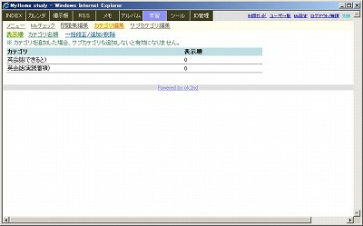
|
- カテゴリおよびサブカテゴリは、システム管理者だけが編集できます。
- カテゴリを追加した場合、サブカテゴリも合わせて追加しないと有効になりません。
|
|
６．問題集のExcelまたはCSVからのアップロード
|
|
- 問題集を、MySQL管理ツールを使って、Excelシートまたは、CSVファイルから一括アップロードすることもできます。
- データベース「_mydb_study」のテーブル「m_study」にアップロードします。
項目(列)で必須なのは、id_category2、c_question、c_answerの3項目です。 - 登録日c_registtimeも登録したい場合、Excelの該当列は必ず文字型にしてください。
- 事前にカテゴリおよびサブカテゴリの登録を行ってください。
- id_category2は、必ずテーブル「m_category2」のid_category2に合わせてください。
|
住所録
|
|
０１．住所録
|

|
- 住所録です。電話番号、EMailアドレス、住所などを管理できます。
- 5項目のチェック項目を管理できます。Ajaxによりチェックした時点で直接データベースに記録されます。「チェック項目見出し編集」で見出しを登録できます。
- 「都道府県」や「読み」でフィルタリングできます。「読み」では、姓、名いずれかの頭1文字で検索します。濁点、半濁点もマッチします。
- 任意のチェック項目を設けてのフィルタリングもできます。
- 住所のGoogleマップ地図表示や自分の住所からの経路検索ができます。
- リスト左のチェックボックスにチェックを入れて、「OneToOneメール」「マップ」「葉書宛名書き」ボタンを押すと、それぞれの一括処理ができます。
|
|
０２．入力画面
|
|
- 1件単位の入力画面です。
- 郵便番号を入力して「住所取得」ボタンを押すと、住所欄に住所が入ります。
- 修正の場合、「住所取得」ボタンでは、住所を上書きしてしまいますので、「Check」ボタンを押してください。住所欄の上に、検索された住所を表示します。
- 住所欄右の「住所検索」をクリックすることで、住所の一部（カナ読みも可）入力による郵便番号と住所の検索ができます。
|
|
０３．日本地図
|

|
- 日本地図です。
- 都道府県をクリックすると、該当の都道府県の住所録一覧が表示されます。
|
|
０４．マップ（日本百名山）
|

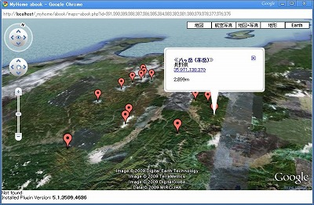
|
- 「マップ」は、Google Maps で選択した住所全てのマーカー付きの地図を表示します。
- マーカーには、氏名、住所、メモを表示します。
- Google Earth 表示もできます。（マップ(V3)では、Google Earth 表示はできません。）
- サンプルデータのような日本百名山などのデータを登録すると、百名山のマーカー付きの日本地図などが表示できます。日本百名山など、住所入力が難しい場合は、緯度、経度を住所欄に入れるとGoogle Maps で正しい位置にマーカー表示できます。緯度と経度は、カンマで結んでください。
（例：35.361,138.729）
ただし、地点が多すぎると表示できない場合があります。 - 百名山データは、「日本百選と座標値」のデータを使わせていただいています。二百名山、三百名山も合わせて登録しています。
http://100sen.cyber-ninja.jp/ - ＜管理者の方へ＞
百名山データを実運用データベースに登録した場合、百名山のカテゴリid_category番号を実運用定義ファイルで設定してください。
例）define("HYAKUMEIZAN_CATEGORY_ID", 3);
百名山データを実運用データベースに登録していない場合HYAKUMEIZAN_CATEGORY_IDを-1で設定してください。
define("HYAKUMEIZAN_CATEGORY_ID", -1);
|
|
０５．OneToOneメール
|

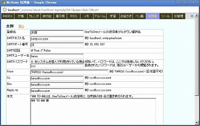
|
- 「OneToOneメール」は、住所録一覧で、チェックした相手宛てにOneToOneでメール送信できます。
- メール本文に、「%% TO %%」を入れておくと、送信時に宛先人名(住所録の姓・名)で置き換えて送信します。
- 「OneToOneメール送信者」で、「OneToOneメール」送信者を複数登録できます。「OneToOneメール」送信時に、送信者を選択できます。
|
|
０６．葉書宛名書き
|

|
- 「葉書宛名書き」は、選択した名簿の宛名書きをしたPDFの葉書を作成します。
- 差出人印刷をチェックすると、自分の名前、住所を差出人欄に印刷します。
- 自分の名前、住所は、My設定の「アカウント情報修正」で登録してください。
- 差出人名欄に入力すると、My設定の名前でなく、ここに入力した名前を使います。
- 宛名や住所の位置とフォントサイズを調整したい場合は、
住所録定義ファイル「__define_abook_pdf_my_sample.php」を、
htdocs/_myhome_myset/の下に、
ファイル名「__define_abook_pdf_my.php」として置き、中の設定値を編集してください。 - 住所録定義ファイルで、印刷フォントをゴシックから明朝体に変更することもできます。
|
|
０７．ExcelまたはCSVからのアップロード
|
|
- 住所録を、「MySQL管理ツール」を使って、Excelシートまたは、CSVファイルから一括アップロードすることもできます。
- データベース「_mydb_study」のテーブル「m_abook」にアップロードします。
項目(列)で必須なのは、id_account、id_categoryです。 - 事前に分類（カテゴリ）の登録を行ってください。
- id_categoryは、必ずテーブル「m_category」のid_categoryに合わせてください。
|
|
０８．都道府県名セット
|
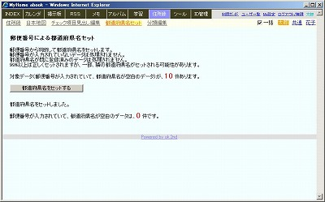
|
- 郵便番号から判断して都道府県名をセットします。
- 郵便番号が入力されていないデータは処理されません。
- 都道府県名が既に登録済みのデータは処理されません。
- 99%以上は正しくセットされますが、一部、隣の都道府県名がセットされる可能性があります。
|
|
０９．世界遺産
|


|
- 住所録にサンプルデータとして世界遺産を登録しています。共通ユーザーに登録しています。
- 世界遺産のデータは、「google maps による世界遺産めぐり」のデータを使わせていただいています。
http://www.geocities.jp/heritages001/heritages.html - 分類フィルタで、世界遺産を選択すると世界遺産専用の一覧形式に変わります。国別、UNESCOのRef番号順に並び替えもできます。
- 世界遺産名をクリックすると、UNESCOの解説ページが開きます。「→日本語」をクリックすると、UNESCOの解説ページをGoogleで翻訳表示します。
- 「マップ」で、世界遺産をGoogleマップでマーカー表示することもできます。Google Earthモード表示もできます。
- Googleマップのマーカーから、UNESCOの解説ページに飛ぶこともできます。
- ＜管理者の方へ＞
世界遺産データを実運用データベースに登録した場合、世界遺産のカテゴリid_category番号を実運用定義ファイルで設定してください。
例）define("SEKAI_ISAN_CATEGORY_ID", 4);
世界遺産データを実運用データベースに登録していない場合SEKAI_ISAN_CATEGORY_IDを-1で設定してください。
define("SEKAI_ISAN_CATEGORY_ID", -1);
|
|
１０．鉄道駅
|


|
- 住所録にサンプルデータとして鉄道駅を登録しています。共通ユーザーに登録しています。
- 鉄道駅のデータは、「駅データ」のデータを使わせていただいています。
http://www.ekidata.jp/ - 分類フィルタで、鉄道駅を選択すると鉄道駅専用の一覧形式に変わります。
- 路線名や駅名で検索できます。駅名よみは、一部登録されていません。
- 検索欄に路線名を入れて検索し、並び替え順を「路線・駅順」にして「マップ」を作成するとGoogleマップで路線駅をマーカー表示した地図が出来ます。
- ＜管理者の方へ＞
鉄道駅データを実運用データベースに登録した場合、鉄道駅のカテゴリid_category番号を実運用定義ファイルで設定してください。
例）define("TETSUDO_EKI_CATEGORY_ID", 5);
鉄道駅データを実運用データベースに登録していない場合TETSUDO_EKI_CATEGORY_IDを-1で設定してください。
define("TETSUDO_EKI_CATEGORY_ID", -1);
|
|
１１．桜名木
|

|
- 住所録にサンプルデータとして桜名木を登録しています。共通ユーザーに登録しています。
- 分類フィルタで、桜名木を選択すると桜名木専用の一覧形式に変わります。
- 桜の名称や住所で検索できます。都道府県フィルタや住所で検索してGoogleマップの作成等ができます。例えば、「群馬県田村郡三春町」の桜マップの作成ができます。
- 桜名称と品種について、MeCabで読み変換したものを登録しています。正しい読みになっていないものも多くあります。
- ＜管理者の方へ＞
桜名木データを実運用データベースに登録した場合、桜名木のカテゴリid_category番号を実運用定義ファイルで設定してください。
例）define("SAKURA_MEISHO_CATEGORY_ID", 5);
桜名木データを実運用データベースに登録していない場合SAKURA_MEISHO_CATEGORY_IDを-1で設定してください。
define("SAKURA_MEISHO_CATEGORY_ID", -1);
|
|
１２．日本百選
|

|
- 住所録にサンプルデータとして日本百選を登録しています。共通ユーザーに登録しています。
「日本百選と座標値」のデータを使わせていただいています。
http://100sen.cyber-ninja.jp/ - かおり風景100選、にほんの里100選、名水百選、日本のさくら名所100選、日本の棚田百選、日本百名城、日本百名橋、残したい日本の音風景100選、車窓絶景100選、農村景観百選など数多くの日本百選のデータが入っています。
- 分類フィルタで、日本百選を選択すると日本百選専用の一覧形式に変わります。
- ＜管理者の方へ＞
日本百選データを実運用データベースに登録した場合、日本百選のカテゴリid_category番号を実運用定義ファイルで設定してください。
例）define("HYAKUSEN_CATEGORY_ID", 7);
日本百選データを実運用データベースに登録していない場合TETSUDO_EKI_CATEGORY_IDを-1で設定してください。
define("HYAKUSEN_CATEGORY_ID", -1);
|
|
１３．チェック項目繰上
|

|
- 住所録チェック項目を、見出しとチェックデータを、1つずらします。
- 年賀状の出受管理の年度繰越等にご利用ください。
- 処理実行後、元に戻すことはできませんので、注意してください。
|
電子メール
|
|
１．メール受信
|

|
- SMTP/POP3メールの受信ができます。Gmail等SMTP/POP3対応のメールも受信できます。
- 複数のメールアカウントのメールを同時に一括して受信ができます。最新の受信メールから最大10件を一覧表示します。
- メールBOX名をクリックすると、最新の受信メールから最大50件を一覧表示します。
- 一覧リストのメール件名をクリックすると、本文を別ウインドウで表示します。本文表示は、HTML有効/無効を選択できます。添付ファイルは読み込みません。
- この「メール」機能でメールを受信しても、メールサーバーにメールは残ります。通常使用しているメールクライアントソフトでの受信に支障は出ません。
|
|
２．メールBOX登録
|
|
- メールBOXを登録します。
- Gmailのメール受信は、SSL対応で受信する必要があります。
- SSLを使う場合は、POP3ホスト名の頭に「ssl://」を付けてください。(例：ssl://pop.gmail.com)
- SSLを使う場合は、POP3ポート番号は995になります。
- PHPがSSL対応になっていない場合は、SSL対応にする必要があります。SSL対応になっているかの確認は、phpinfoで「Registered Stream Socket Transports」に「ssl」が含まれているかを確認します。
http://localhost/xampp/phpinfo.php - 含まれていない場合は、「xampp/php/php.ini」を修正します。「xampp/php/php.ini」の
;extension=php_openssl.dll
のコメントアウトを外した上で、Apacheを再起動します。Windowsの場合、コマンドプロンプトで以下を実行してください。
net stop Apache2.2
net start Apache2.2 - Gmailの場合は、ユーザー名の頭に「recent:」を付けてください。
- ※ この「メール」機能を使うと、他のユーザーから、メールやメールアカウントのパスワードを参照される可能性がありますので、MyHome Portalを個人で利用されている場合を除いては利用しないことをお勧めします。
|
お絵かき
|
|
１．SVG画像編集
|
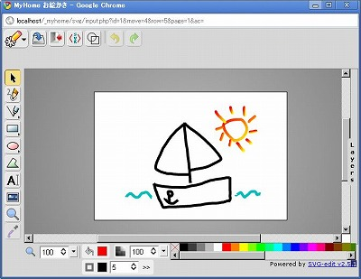
|
- svg-editを使って、SVG画像データを作成・編集できます。
- 「画像を保存」で、作成したSVG画像データをデータベースに保存できます。
- IE6, 7, 8では、通常、svg-editは動作しません。Chrome Frame pluginをインストールすると、IE6, 7, 8でもsvg-editが動作するようになります。
|
|
２．SVG画像表示
|
|
- 保存したSVG画像の表示画面です。
- コメントを入れられます。
- 保存した画像は、修正、削除ができます。
- 保存した画像は、他ユーザーのものを含めて自分のデータとしてコピーして再利用できます。
|
|
３．サムネイル一覧
|
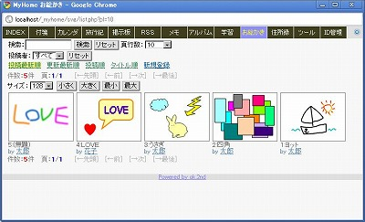
|
- 保存した画像はサムネイル一覧表示できます。
- サムネイルは、画像の縦横比を3:4として縮小して表示します。
|
ペン画
|
|
１．ペン画編集
|


|
- 万年筆、マーカーペン、スプレーガンタッチの絵が描けます。
- カレーパレットを切り替えできます。
- 背景の紙のテクスチャを変更できます。
- 描いた画像データを、Base64エンコーデイングしたPNG画像として保存できます。
- Chrome、Firefoxで、動作を確認しています。
|
|
２．ペン画表示
|
|
- 保存した画像の表示画面です。
- コメントを入れられます。
- 保存した画像は、修正、削除ができます。
- 保存した画像は、他ユーザーのものを含めて自分のデータとしてコピーして再利用できます。
|
|
３．サムネイル一覧
|

|
- 保存した画像はサムネイル一覧表示できます。
|
預貯金管理
|
|
０１．(簡易) 預貯金管理
|
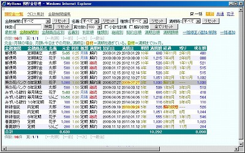

|
- 簡易的な預貯金管理です。
- 定期と月額積立のみを対象としています。ボーナス加算機能はありません。月額に1/6を加算するなどしてカバーしてください。
- 金額の単位は、千円を想定していますが、限定はしていません。
- 利息計算は簡易的な近似値計算で正確ではありません。満期額、現在額は、あくまでも概算目安と考えてください。
- 月額積立の場合、元金は月額x今日までの月数を表示します。
- 満期日は、満期を過ぎている場合と、満期まで3ヶ月の場合、それぞれ色付きで表示します。
- 期間は、満期までの月数。経過は、今日までの月数です。
- 入力項目の継続は、それぞれ、「継続＝満期時自動継続。解約＝満期時自動解約。解約済＝過去分の記録用です。合計金額に足されません。」です。
- 名義別、種類別、継続などでフィルタリングできます。
- 一覧テーブルの列名をクリックすると、その項目で並び替えができます。
- 小計計算も出来ます。小計計算モードでは、並び替えのキーに合わせて小計を表示します。並び替えキーを契約日と満期日にした場合は、それぞれ年単位で小計します。
|
|
０２．クロス集計
|
|
- クロス集計で、名義別×金融機関別の元金、現在額、満期額のクロス集計が出来ます。
|
|
０３．ライフプラン
|
|
- 年単位の簡易資産運用シミュレーションができます。
初期資産と、毎年の収入・支出を入力して、毎年の資産残高を計算し、グラフ化します。
「預貯金管理」のデータとは連動しません。
最大9個まで、データを保存できます。データは、MySQLデータベースに保存されます。
|
Google Maps
|
|
０１．Google Maps API V3版
|

|
- Google Maps API V3を使った地図ツールです。
- 地名等を入れて検索してください。ウインドウ一杯に地図を表示します。マーカーを残したまま、新しい地名の検索も出来ます。
- レストランやコンビニ等の場所検索もできます。
- マーカーが複数ある場合、ルート表示もできます。
- 地図の任意の地点をクリックすると、その地点の緯度・経度、住所、標高を表示できます。クリックした任意の地点にマーカー作成もできます。
- 任意の地点間の距離を測定することもできます。
- Panoramioの写真を表示することも出来ます。写真をタグで絞り込むことも出来ます。例えば「桜」で絞り込むなど。Panoramio機能は廃止されましたので、使えません。
- ストリートビュー表示もできます。
- プルダウン「探す」で、「世界遺産、日本百名山、日本百選、桜名木、鉄道駅」のいずれかを選択すると、「住所録」と連動して、現在表示している地図範囲の該当の場所をマーカーで表示します。
- url引数に、場所とズーム倍率を指定できるようにもしています。
http://localhost/_myhome/tools/google-maps-earth-v3.php?addr=%e6%9d%b1%e4%ba%ac%e3%82%bf%e3%83%af%e3%83%bc&zoom=18 - 印刷をする場合は、Firefoxをお使いください。
|
|
０２．Google Maps (複数地点) API V3版
|
|
- Google Maps API V3の複数地点タイプです。
- 複数地点の地名をスペースで区切って検索出来ます。複数地点をそれぞれマーカー表示します。
- url引数で、場所指定もできるようにもしています。url引数の場合は、複数地点を「+」で区切って指定してください。
http://localhost/_myhome/tools/google-maps-earth-multi-v3.php?addr=%E6%9D%B1%E4%BA%AC+%E5%90%8D%E5%8F%A4%E5%B1%8B+%E5%A4%A7%E9%98%AA - サイドバーに検索地点名の一覧を表示します。
- 検索した地点のルート表示もできます。
- 地図の任意の地点をクリックすると、その地点の緯度・経度と住所を表示できます。
- 任意の地点間の距離を測定することもできます。
- ストリートビュー表示もできます。
- Panoramioの写真を表示することも出来ます。Panoramio機能は廃止されましたので、使えません。
|
|
０３．Google Maps & Earth API V2版
|


|
- Google Maps API V2 とGoogle Earth APIを組み合わせたツールです。
- ストリートビュー表示もできます。
- 検索した地図を、Google Earth APIを使って3D立体表示にできます。
Earthモードで、Shiftキーを押しながら、地図をクリックしたままマウスを上下に動かすと地図を見る角度が変わります。 - 3D地図を表示するためには、Google Earth プラグインをインストールする必要があります。
http://code.google.com/intl/ja/apis/earth/ - url引数に、場所とズーム倍率を指定できるようにもしています。
http://localhost/_myhome/tools/google-maps-earth.php?addr=%e6%9d%b1%e4%ba%ac%e3%82%bf%e3%83%af%e3%83%bc&zoom=18
|
|
０４．Google Maps & Earth (複数地点) API V2版
|
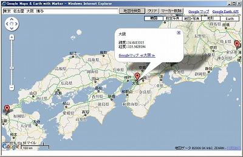
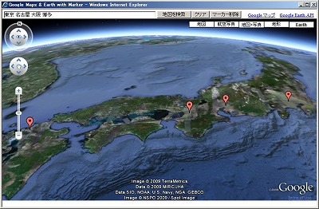
|
- Google Maps & Earth API V2の複数地点タイプです。
- 複数地点をスペースで区切って入力できます。
- 検索した地図を、Google Earth APIを使って3D立体表示にできます。
- url引数で、場所指定もできるようにもしています。url引数の場合は、複数地点を,(カンマ)で区切って指定してください。
http://localhost/_myhome/tools/google-maps-earth-multi.php?addr=%E6%9D%B1%E4%BA%AC,%E5%90%8D%E5%8F%A4%E5%B1%8B,%E5%A4%A7%E9%98%AA
|
GPSログ View
|
|
GPSログ View
|

|
- GPXファイルをアップロードすると、Google Mapsを使って、ルート表示できます。
- ルート全体の距離、出発時間、到着時間、所要時間、平均速度、最高速度、最高地点、最低地点も表示します。
- 時間間隔指定で、ルートの途中にマーカーを表示できます。最高速度は、マーカー間速度の最高速度です。
- マーカーをクリックすると、その地点の標高、前マーカーからの距離、前マーカーからの平均速度、出発地点からの距離、出発地点からの平均速度を表示します。
- 「ルート再生」ボタンで、ルートを順に人間マークのマーカーが移動します。マーカーをクリックすると、ルート再生の開始地点が、そのマーカーの場所となります。
- アップロードしたGPSログデータは、データベースに登録されます。GPXの<name>と<desc>を名前、補足説明として登録します。
- ルートの標高と速度をグラフ化したものを、Googleマップの下に表示します。
- 写真をルートマップの中に表示することも出来ます。JPEGに書き込まれているGPS情報を使う方法と、写真の撮影時間から撮影場所を特定する方法を選択できます。表示する写真は、フォルダで指定します。
|
|
地点一覧マップ
|

|
- GPSログ一覧で選択した任意の地点のスタート地点一覧を、Googleマップで表示します。
|
チャット
|
|
１．INDEXトップページ
|
|
- MyHome Portalユーザー全員参加型のチャット(Chat)です。
- INDEXトップページにチャットの最新(30分以内)の投稿3件分が表示されます。
- Ajax利用していますので、Webページを開いたままでも、新しい投稿があれば、更新されます。
- 「チャット」をクリックすると、チャット入力ページを別ウインドウで表示します。
|
|
２．チャット(Chat)入力ページ
|

|
- チャット(Chat)入力ページです。
- 表示件数や、投稿の経過時間を指定できます。
- チャット表示エリアは、Ajax利用していますので、Webページを開いたままでも、新しい投稿があれば、更新されます。
|
タイマーアラート
|
|
タイマーアラート
|

|
- 設定した時間になると、JavaScriptのalertによるアラートが出ます。
- MyHome Portalページヘッダー右上の時計アイコンをクリックすると「タイマーアラート設定」ページが開きます。
- 10個まで設定できます。時間とメッセージを設定してください。
- 日や曜日を設定すると、毎月または毎週、その時間になるとアラートが表示されます。
- 日や曜日を設定しない場合、毎日その時間になるとアラートが表示されます。
- このアラート機能が実行されるためには、下にフッター表示のあるMyHome Portalの主要コンテンツ・ページをブラウザで開いている必要があります。
- ブラウザのタブの一つにMyHome Portalの主要コンテンツが開いていれば機能します。
- タイマーアラート機能が有効になるページのフッター部分には、当日のその時点以降実行されるアラート時間が表示されます。
- アラート時間の上にカーソルを載せるとアラートメッセージがツールチップで表示されます。
|
週間天気予報
|
|
週間天気予報
|

|
- 全国の任意の複数地点の週間天気予報を一覧形式で確認できます。
- MyHome Portalページヘッダー右上の天気アイコンをクリックすると「週間天気予報」ページが開きます。
- livedoor天気情報の「Weather Hacks」を使っています。
- 表示地点の設定はブラウザのCookieに保存します。
- 表示順序はドラッグ＆ドロップで変更できます。表示地点を設定し直すと、表示順序はリセットされ北から順に並びます。
|
physicSketch
|
|
１．physicSketch編集
|

|
- 物理エンジンを使った物体落下シミュレーションゲームです。
JavaScriptライブラリ「physicsketch.js」「box2d.js」を使っています。 - 画面上に図形を描くと、その図形が物理法則に従って落下します。図形同士がぶつかると反発します。
- 図形の一部を選択し、図形を固定することができます。図形と図形を連結することもできます。操作は、Helpボタンで確認してください。
- 描いた図形データは、データベースにJSON化して保存できます。
- Chromeで、動作を確認しています。
|
|
２．physicSketch表示
|


|
- 保存した図形データの表示画面です。
- Startボタンで落下開始できます。
- 落下スピードを変えることもできます。
- Addボタンで図形全体をセットで追加できます。物体同士が絡み合い、複雑な動きをします。
- 全画面での表示も出来ます。
- 保存した図形データは、修正、削除ができます。
- 保存した図形データは、他ユーザーのものを含めて自分のデータとしてコピーして再利用できます。
|
|
３．physicSketchサムネイル一覧
|

|
- 保存したデータはPNG画像としてサムネイル一覧表示できます。
|
MySQL管理
|
|
１．MySQL管理ツール
|


|
- MySQLのデータベース管理ツールです。
- データベース一覧、テーブル一覧、フィールド一覧、ビューのスキーマ表示、テーブルデータ一覧表示ができます。
- テーブルデータ一覧では、列名クリックで並び替えもできます。列名2回クリックで降順になります。
- カラムid_accountとid_categoryの検索フィルタもあります。
- 「c_delete=999 完全削除」で、削除フラグ付きデータを完全削除します。
- テーブルデータを、CSVファイルでダウンロードが出来ます。ダウンロードの文字コードは、Shift-JISに変換もできます。
- Excelシートをアップロードして、データベーステーブルにインポートもできます。拡張子.xlsのみ対応しています。日付型のデータは正常に取り込めませんので、文字型にしてください。
- CSVファイルをアップロードして、データベーステーブルにインポートもできます。デリミッタ(区切り文字)はカンマ( , )、文字列の囲みはダブルクォーテーション(")のみサポート。文字コードは、Shift-JIS、UTF-8、EUCなど自動判別します。
- システム管理者用です。
|
ツール
|
|
０１．HTMLテキスト抽出 & メール送信
|
|
- ホームページのURLを入れてボタンを押すと、HTMLからテキストのみを抽出します。
- 抽出したテキストから編集で必要な部分のみを抜き出してメール送信できます。
- メール送信先は、My設定でスケジュール送信先として登録してある電子メールアドレスです。
- 料理レシピサイトなどから料理の材料部分のみを抜き出して自分の携帯メールに送信するなどの使い方ができます。
|
|
０２．HTMLテキスト抽出 複数一括
|
|
- 複数のURLから一括してテキスト抽出します。
- テーブルデータ出力時のセパレータ（区切り文字）を指定できます。デフォルトはスペースです。カンマ(,)にすることで、CSVとしての利用が容易になります。
- テーブルデータ出力時に、行単位に先頭に文字を付加することもできます。CSV利用時に、共通のキーを付加したい場合に使えます。
- テーブルのみに限定して抽出もできます。（ただし、階層構造には未対応です。）
- テーブルサイズを指定サイズ以上のものに限定することもできます。
|
|
０３．HTMLテキスト抽出 複数一括 (タグ指定)
|

|
- 複数のURLから一括してテキスト抽出します。
- 任意の抽出タグを指定して、テキストを抽出します。抽出タグは、元のHTML内の順序にあわせて、必要個数分指定します。
- セパレータとしてカンマ(,)を指定することで、CSV形式にできます。
- 抽出文字列を"で囲む(括る)ことも出来ます。
- CSVファイルとしてダウンロードすることも出来ます。Shift-JISコードに変換します。
|
|
０４．HTML URL抽出 & ファイルダウンロード
|

|
- ホームページのHTMLからAタグのURLを抽出します。
- 階層指定もできます。
- リンク先の他サイトも含めてサーチできます。
- AタグやIMGタグの画像や動画等のファイルをダウンロードすることもできます。
- ダウンロードファイルの保存先は、サーバーローカルディスクの任意のディレクトリを指定できます。ダウンロードファイルは、ホームページサイト名のフォルダ単位に保存します。ファイル名の頭に「上位フォルダ名_」が付きます。
- ダウンロードファイルのサイズ指定もできます。
- 抽出およびダウンロードのロジックは完璧ではありません。すべてのファイルをダウンロードできる保障はありません。
- システム管理者用です。
|
|
０５．Excel to グラフ生成
|

|
- Excelシートをアップロードして、グラフを生成します。
- ワンクリックでグラフの種類やスタイルを変更できます。
- グラフ生成には、以下のJavaScript ライブラリーを利用しています。
＜Bluff＞
http://bluff.jcoglan.com/
＜HTML5.jp JavaScript ライブラリー＞
http://www.html5.jp/library/index.html
＜Google Chart API＞
http://code.google.com/intl/ja/apis/charttools/index.html
|
|
０６．縦計だけの表計算
|

|
- 縦計だけのシンプルな表計算シートです。
- 各セルには、()付きの数式の入力もできます。
- セルに数字や数式を入れると、自動的に縦計を計算します。
- Enterキーでセルが縦に移動します。
- 数式の計算はJavaScriptのeval()を使っていますので、JavaScriptの数学関数(Math)も使えます。
|
|
０７．実運用環境バックアップ
|
|
- 実運用定義ファイル「__define_common_my.php」と実運用データベースのバックアップをします。
- MySQLデータベースをmysqldumpでバックアップします。
- 実運用定義ファイル「__define_common_my.php」と、MySQLデータベースバックアップファイルを、ZIPファイルに圧縮します。
- バックアップ先ディレクトリ「../../_myhome_backup」を作成し、ZIPファイルを3つに分けて生成します。3つのファイルを別々の媒体に保管することで、ID管理のID、パスワード情報を盗まれにくくなります。
- 実運用定義ファイルで、「FILE_MANAGER_CIPHER_SEED」が定義されている場合、MySQLデータベースバックアップの暗号化ファイル(拡張子：.encode3)も作成します。
- バックアップ処理中にMyHome Portalの他のページを開かないでください。他のページを開くとハングアップします。ハングアップした場合は、XAMPPコントロールパネルでApacheを一旦停止し再起動してください。
- システム管理者用です。
|
|
０８．ファイルマネージャー(暗号化/復号化付き)
|
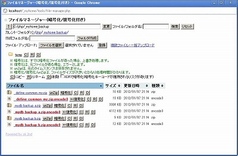

|
- 簡易的なファイルマネージャーです。
- サーバーローカルのファイルをブラウザ経由で確認できます。
- ファイルやフォルダのコピー、リネーーム、削除ができます。削除はゴミ箱に入るわけではなく、直接削除されますので、注意してください。
- フォルダ作成もできます。
- ファイルアップロードもできます。
- 複数ファイルの一括アップロードもできます。
Chrome、Firefoxでは、Windowsデスクトップからファイルをドラッグ&ドロップでアップロードできます。 - アップロードは、同一ファイル名のファイルがある場合、上書きします。
- ファイル名をクリックすると、ダウンロードします。
- ZIPファイルの解凍もできます。
- ファイルの暗号化および復号化もできます。
- 暗号化/復号化用のキーコードは、実運用定義ファイルの「FILE_MANAGER_CIPHER_SEED」で事前に設定しておきます。
- 利用開始後、「FILE_MANAGER_CIPHER_SEED」を変更すると、それ以前に暗号化したファイルは復元できなくなります。
- 暗号化は、すでに暗号化ファイルがあった場合、上書き処理します。
- 復号化は、元ファイルがある場合、エラーとします。
- 50MB以上のファイルは暗号化できません。「XORで暗号化」を選択するとと、ファイルサイズの制限はなくなりますが、暗号化キーコードが推測されるリスクがあります。
- システム管理者用です。
|
|
０９．ソースコード表示&ソースコードエディタ
|

|
- PHP、Python、JavaScript等のソースコードを整形表示と編集ができます。
- ファイルマネージャー機能もついています。ファイルやフォルダのコピー、リネーム、削除ができます。削除はゴミ箱に入るわけではなく、直接削除されますので、注意してください。
- ファイル名、更新日時、サイズで昇順/降順の並び替えもできます。
- システム管理者用です。
|
|
１０．テキスト縦書き表示
|
|
- 文章を縦書きで表示します。
- Chrome、IE6～8で、動作します。
- フォントサイズなどを指定できます。
- 印刷は、Chromeの「システムダイアログを使用して印刷」を使って印刷してください。Chromeの通常のPDF Viewerによる印刷プレビュー付きの印刷では正しく印刷できません。
- IE9では、ページ分割ができないため、正しく印刷できません。
|
|
１１．MeCab：漢字読み変換(CSVファイル一括)
|
|
- CSVファイルをアップロードし、指定列の漢字を読み変換した列を追加したCSVファイルをダウンロードできます。
- 形態素解析エンジンMeCabを使って漢字の読みを変換します。すべてが正しい読みになる保障はありません。
- 処理時間はかなり遅いです。
- この機能を使うためには、MeCabをインストールする必要があります。MeCabでインストールする辞書は「SHIFT-JIS」を前提にしています。
- 実運用定義ファイルで、MeCabのインストールパスを設定しておく必要があります。
例：define("MECAB_EXE_PATH", "C:\Program Files\MeCab\bin\mecab.exe");
|
|
１２．jSnow
|

|
- ページ内に雪を降らせられるjQueryプラグイン「jSnow」を使ったページ。
- 降らせる文字や色などを変えられる「お好み」ページもあります。
|
|
１３．横2段 テキストエリア
|
|
- 横2段にテキストエリアがあるだけのページです。
- ログイン・ユーザー毎に1ページです。
- 保存ボタンで、MySQLデータベースに保存されます。画面遷移はしません。
- フォントサイズとフォント種類は変更できます。
- 文章の修正や、2つの文章(例えば、英文と日本語)を比較しながら読みたい場合等にお使いください。
|
|
１４．はてなキーワード自動リンク & Yahoo!キーフレーズ → Weblio
|

|
- 文章を入れると、はてなキーワード自動リンクAPIを使って、キーワードを抽出し、キーワード部分をリンクにしたHTMLを生成します。
- リンク先をWeblioにしたHTMLもあわせて生成します。
- Yahoo!キーフレーズ抽出APIを使って、キーフレーズ抽出も行います。
- Yahoo!キーフレーズ抽出を使う場合、Yahoo! JAPANでアプリケーションIDを取得し、実運用定義ファイルで「YAHOO_JAPAN_APPLICATION_ID_KEYPHRASE」を設定してください。
|
|
１５．Yahoo ホームページ対訳
|

|
- 指定したURLのホームページとYahooウェブ翻訳で翻訳したページを左右に並べて表示します。
- 左右のフレームは同時にスクロールできます。
|
ＩＤ管理
|
|
１．パスワード入力
|
|
- ID管理では、専用のパスワード入力が必要です。
|
|
２．一覧表示
|

|
- 一覧表示画面です。
- パスワードなどのID情報を管理します。
- パスワードは独自の方式で暗号化して保存します。
- 値入力欄に-および半角スペースが含まれる場合、-で区切ったボックス表示と-抜きのボックス表示もします。氏名、住所、クレジットカード番号等の入力にご利用ください。
- [C]ボタンを押すと、クリップボードにコピーします。サイトのログイン画面等にそのままペーストできます。
- W↑をクリックすると、ID&パスワードの小ウインドウと該当ホームページのウインドウ2つが同時に開きます。ID&パスワードのコピー&ペーストがし易くなります。
|
|
３．ID情報登録画面
|
|
- IDやパスワードの登録画面です。
|
ユーザー一覧
|
|
１．ユーザー一覧（システム管理者用）
|
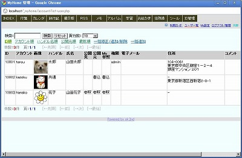
|
- システム管理者のユーザー一覧画面です。
- 一般ユーザーでは、アカウント名や電子メールアドレスなどは表示されません。
- 一括修正/追加/削除で、一部のユーザー情報を修正できます。
- 管理者権限を付ける場合は、権限に「admin」と入れてください。
|
|
２．ユーザー一覧（一般ユーザー）
|
|
- 一般ユーザーのユーザー一覧画面です。
|
Ｍｙ設定
|
|
１．アカウント情報表示
|

|
- 自分のアカウント情報の表示画面です。
|
|
２．アカウント情報修正
|
|
- 自分のアカウント情報を修正できます。
- スケジュール送信先電子メールアドレスを登録しておくと、携帯メール等にToDoやスケジュールを送信することができます。
- カレンダーアルバムフォルダのフォルダ階層を以下のようにして、写真を登録すれば、カレンダーの「アルバム」表示で該当の日付に写真表示します。
/2008/
/2008/2008-09-16-xxx/
/2008/2008-09-23-yyy/ - ページ背景色を設定できます。
- 住所（経路起点）を登録すると、INDEXトップページ「経路(Google)」で、目的地のみを入れて、起点からのGoogle経路検索ができます。また、カレンダー本文の駅名や住所を「地」ボタンで囲むと、カレンダー詳細表示で経路起点からのGoogle経路表示リンクが表示されます。
- 最寄駅(乗換乗車駅)を登録しておくと、INDEXトップページ「乗換(駅探)」で、下車駅のみを入れて乗換検索が出来ます。
- カレンダーで件名を使わずにスケジュール本文のみを使う設定ができます。この設定をすると入力画面に件名欄が表示されません。
- トップメニュー(コンテンツ・ナビ)の色を変えられます。
- 修正には、ログインパスワードが必要です。連続再修正の利便性のため、ログインパスワードは3分間保持されます。
|
|
３．パスワード修正
|
|
- パスワード修正画面です。
|
|
４．ID管理パスワード修正
|
|
- ID管理のパスワード修正画面です。
- ID管理画面を開くためには、通常パスワード以外に、このID管理パスワードの認証が必要です。
|
|
５．My参照メンバ修正
|
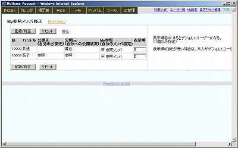
|
- My参照メンバを設定できます。
- 表示順を0にするとデフォルトユーザーになります。0は1個のみが有効です。共有アカウントをデフォルトにしたい場合に、お使いください。
- 表示順0指定が無い場合は、本人がデフォルトユーザーになります。
|
|
６．公開先メンバ修正
|
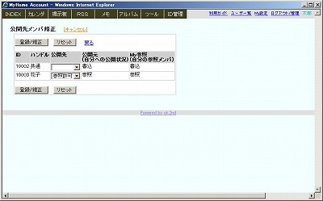
|
- 公開先メンバを、設定できます。
- ユーザー単位に、参照許可、書込許可の設定ができます。
- カレンダーの伝言機能によるスケジュール登録では、書込許可設定されていないユーザーにも新規スケジュールの登録が可能です。
|
ログアウト/管理
|
|
１．ログアウト（一般ユーザー）
|
|
- 一般ユーザーのログアウト画面です。
|
|
２．ログアウト/管理（管理者用）
|
|
- システム管理者用画面です。
- 一般ユーザーでは、管理用メニューは表示されません。
|
|
３．ログイン履歴表示（管理者用）
|

|
- ログインログデータを一覧表示します。
- 古いログを一括削除することもできます。
|